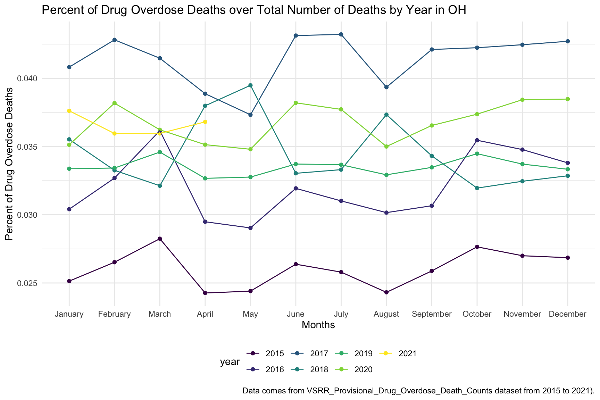
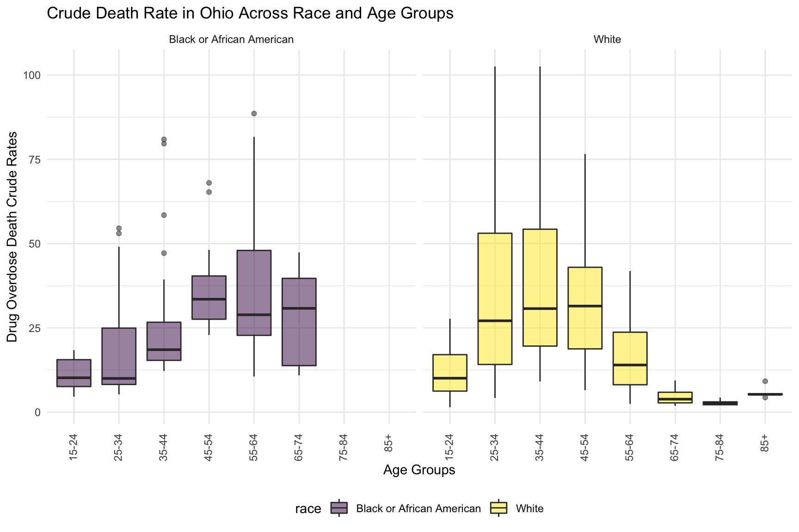
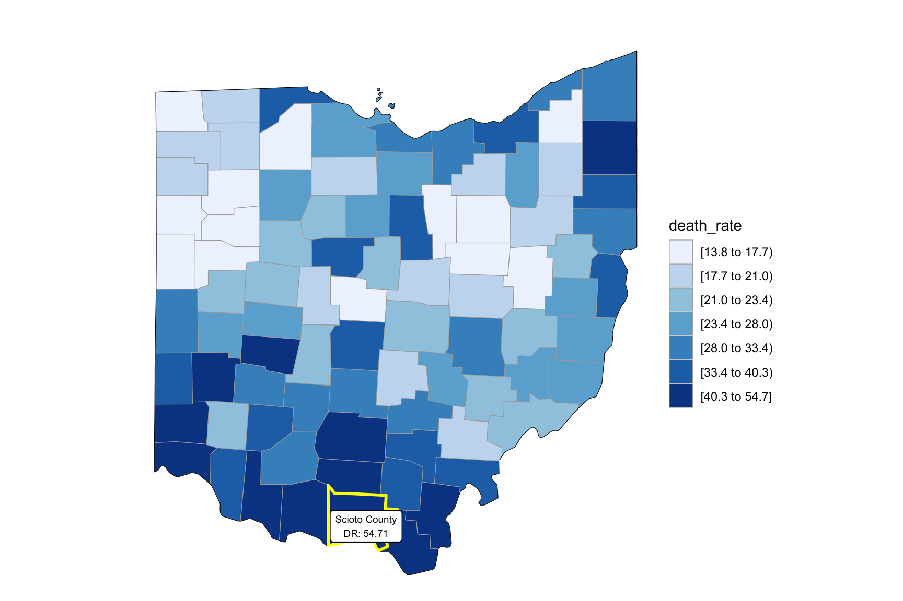

Ohio Data analyzing
Import the Libraries and Data Cleaning
drug_overdose = read_csv("./data/VSRR_Provisional_Drug_Overdose_Death_Counts.csv") %>%
janitor::clean_names()
state_level = c(state.name[1:8], "District of Columbia", state.name[9:32],"New York City", state.name[33:50])
drug_overdose_52 =
drug_overdose %>%
filter(!(state_name %in% c("United States"))) %>%
relocate(state_name) %>%
mutate(month = factor(month, levels = month.name), # change month and year to factor
year = factor(year),
state_name = factor(state_name, levels = state_level)) %>%
arrange(state_name) %>%
group_by(state_name, year) %>%
mutate(month = sort(month))
drug_overdose_death =
drug_overdose_52 %>%
select(-c(state, footnote_symbol, percent_complete, period, percent_pending_investigation, predicted_value)) %>%
filter(indicator %in% c("Number of Deaths", "Percent with drugs specified", "Number of Drug Overdose Deaths"))Ohio_death =
drug_overdose_52 %>%
filter(state_name %in% "Ohio",
indicator %in% c("Number of Deaths", "Number of Drug Overdose Deaths")) %>%
select(year, month, indicator, deaths = data_value) %>%
pivot_wider(
names_from = indicator,
values_from = deaths
) %>%
janitor::clean_names() %>%
group_by(year, month) %>%
mutate(
percent_overdose_death = number_of_drug_overdose_deaths / number_of_deaths
)%>%
mutate(year = factor(year))By Drug Type
Ohio_df =
drug_categories %>%
filter(state_name %in% c("Ohio"))
ggplot(Ohio_df, aes(x = indicator, y = data_value, fill = indicator)) +
geom_violin(alpha = 0.5) +
scale_x_discrete(labels = c("Psychostimulants \n with abuse potential \n (T43.6)", "Methadone \n (T40.3)", "Natural & \n semi-synthetic \n opioids \n (T40.2)", "Natural & semi-\n synthetic opioids, \n incl. methadone \n (T40.2, T40.3)", "Heroin \n (T40.1)", "Cocaine \n (T40.5)", "Synthetic opioids, \n excl. \n methadone \n (T40.4)", "Natural, \n semi-synthetic, & \n synthetic opioids, \n incl. methadone \n (T40.2-T40.4)", "Opioids \n (T40.0-T40.4,\n T40.6)")) +
guides(fill = guide_legend(nrow = 6, byrow = TRUE)) +
labs(
title = "OH Number of Drug Overdose Deaths with Drug Categories (2015 - 2021)",
x = "Drug Categories",
y = "Number of Drug Overdose Deaths",
caption = "Data comes from VSRR_Provisional_Drug_Overdose_Death_Counts dataset."
)  From this graph we can see that highest drug overdose death for Ohio is caused by Cocaine, Synthetic opioids and opioids.
From this graph we can see that highest drug overdose death for Ohio is caused by Cocaine, Synthetic opioids and opioids.
By Year
oh_death_by_year =
drug_overdose_52 %>%
filter(state_name %in% c("Ohio")) %>%
ungroup() %>%
select(year, month, indicator, data_value) %>%
filter(indicator %in% c("Number of Deaths", "Number of Drug Overdose Deaths")) %>%
pivot_wider(
names_from = indicator,
values_from = data_value
) %>%
janitor::clean_names() %>%
group_by(year, month) %>%
mutate(
percent_overdose_death = number_of_drug_overdose_deaths / number_of_deaths
)
oh_death_by_year %>%
ungroup() %>%
ggplot(aes(x = month, y = percent_overdose_death, color = year)) +
geom_point() +
geom_line(aes(group = year)) +
labs(
title = "Percent of Drug Overdose Deaths over Total Number of Deaths by Year in OH",
x = "Months",
y = "Percent of Drug Overdose Deaths",
caption = "Data comes from VSRR_Provisional_Drug_Overdose_Death_Counts dataset from 2015 to 2021)."
) In the graph of Drug Overdose Deaths with Drug Categories by Year, we observe that year 2017 have highest number of drug overdose death than other years.
oh_death_by_year %>%
ungroup() %>%
ggplot(aes(x = month, y = percent_overdose_death, group = NA, color = year)) +
geom_point() +
geom_line() +
facet_grid(.~ year) +
labs(
title = "Percent of Drug Overdose Deaths over Total Number of Deaths by Year in OH",
x = "Months",
y = "Percent of Drug Overdose Deaths",
caption = "Data comes from VSRR_Provisional_Drug_Overdose_Death_Counts dataset from 2015 to 2021."
) +
theme(axis.text.x = element_text(angle = 90, hjust = 1)) In the graph of Each month Drug Overdose Death Within a Year, we are able to see the trend changing of drug overdose in continuous years. The highest percentage of drug overdose death is 2017. There is increase percentage of cause drug overdose death in 2020 which is cause by the COVID-19.
Drug ~ Year
In the graph of Number of Drug Overdose Deaths with Drug Categories by Year, we can see that drug overdose death in Ohio keep increasing over 2019-2021 with specific drug types like Heroin, Opioids and Synthetic Opioids. Since we miss data from 2015-2018, so we just include 2019-2021 in this graph.
By Age and Race
oh_death_by_age =
read_csv("./data/agegroup_race_state_year_99-19.csv") %>%
janitor::clean_names() %>%
select(state, year, ten_year_age_groups, race, deaths, population) %>%
filter(state %in% c("Ohio")) %>%
mutate(year = factor(year),
crude_rate = deaths/population * 100000)
oh_death_by_age %>%
mutate(ten_year_age_groups = gsub("years", "", ten_year_age_groups)) %>%
ggplot(aes(x = ten_year_age_groups , y = crude_rate, fill = race)) +
geom_boxplot(alpha = 0.5)+
facet_grid(~race)+
labs(y = "Drug Overdose Death Crude Rates", x = "Age Groups") +
ggtitle("Crude Death Rate in Ohio Across Race and Age Groups") +
theme(axis.text.x = element_text(angle = 90, vjust = 0.4, hjust = 1))
Overdose death with Drug Categories by Age and Race shows that black or African American people in Ohio among age 55-64 have highest drug overdose death rate. White people in Ohio among age 35-44 have highest drug overdose death rate.
Income
Number of death vs median household income
OH_income_df =
read_csv("./data/Median_Household_Income_OH.csv") %>%
janitor::clean_names() %>%
select(year, household_income_by_race, household_income_by_race_moe, geography) %>%
filter(str_detect(geography,"OH|Ohio|United States"),
year >= "2015") %>%
mutate(year = factor(year))
OH_income_df %>%
mutate(text_label = str_c("Year: ", year, "\nMedian Household Income: $", household_income_by_race,
"\nMargin of error: ± $", household_income_by_race_moe)) %>%
plot_ly(
x = ~year, y = ~household_income_by_race, color = ~geography, text = ~text_label,
alpha = 0.5, type = "scatter", mode = "markers+lines", colors = "viridis", error_y = ~list(array = household_income_by_race_moe)) %>%
layout(
title = "Median Household Income: OH vs. The U.S",
xaxis = list(title = "Year"),
yaxis = list(title = "Median Household Income"))Ohio around Cincinnati, Kentucky, Indiana have the higher income compare to other part of Ohio and US.
Income and drug overdose death percent by year
OHincome_drug_df =
Ohio_death %>%
ungroup() %>%
group_by(year) %>%
summarize(overdose_death_rate = sum(number_of_drug_overdose_deaths)/sum(number_of_deaths)) %>%
inner_join(., OH_income_df %>% filter(geography %in% "Ohio"))
year_death =
OHincome_drug_df %>%
ggplot(aes(x = year, y = overdose_death_rate, group = NA))+
geom_point()+
geom_line()
income_year =
OHincome_drug_df %>%
ggplot(aes(x = year, y = household_income_by_race, group = NA))+
geom_point()+
geom_line()
smooth =
OHincome_drug_df %>%
ggplot(aes(x = household_income_by_race, y = overdose_death_rate, group = NA))+
geom_point()+
geom_smooth(method = "lm", se = FALSE, color = "royalblue4")
(year_death + income_year)/smoothFrom graph income VS drug overdose we can find that higher drug overdose rate have association with higher income.
OH Drug Map
data(county.fips)
abc = county.fips %>%
separate(polyname, into = c("state", "county"), sep = "\\,") %>%
filter(state %in% "ohio") %>%
select(-state) %>%
as_tibble()Our drug map shows that highest death rate occur in south Ohio region, which is close to the region have higher income in Ohio. This finding can imply the association between high income and high drug overdose death rate.
Counties change, 5-yr interval
2003
year_select = 2003
start_county_df = left_join(oh_county_df ,abc, by = "county") %>%
select(county, year, death_rate, fips) %>%
filter(year == year_select)
start_county_df %>%
group_by(fips) %>%
mutate(fips = as.numeric(fips)) %>%
rename(region = fips,
value = death_rate) %>%
county_choropleth(state_zoom = c("ohio"),
legend = "death_rate")+
highlight_county(start_county_df[which.max(pull(start_county_df, death_rate)),])+
add_text_county(start_county_df[which.max(pull(start_county_df, death_rate)),])2008
year_select = 2008
start_county_df = left_join(oh_county_df,abc, by = "county") %>%
select(county, year, death_rate, fips) %>%
filter(year == year_select)
start_county_df %>%
group_by(fips) %>%
mutate(fips = as.numeric(fips)) %>%
rename(region = fips,
value = death_rate) %>%
county_choropleth(state_zoom = c("ohio"),
legend = "death_rate")+
highlight_county(start_county_df[which.max(pull(start_county_df, death_rate)),])+
add_text_county(start_county_df[which.max(pull(start_county_df, death_rate)),])2013
year_select = 2013
start_county_df = left_join(oh_county_df,abc, by = "county") %>%
select(county, year, death_rate, fips) %>%
filter(year == year_select)
start_county_df %>%
group_by(fips) %>%
mutate(fips = as.numeric(fips)) %>%
rename(region = fips,
value = death_rate) %>%
county_choropleth(state_zoom = c("ohio"),
legend = "death_rate")+
highlight_county(start_county_df[which.max(pull(start_county_df, death_rate)),])+
add_text_county(start_county_df[which.max(pull(start_county_df, death_rate)),])2018
